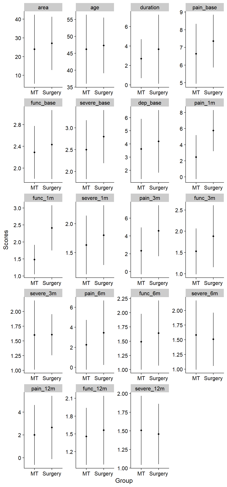

Last updated: 2020-11-23
Checks: 7 0
Knit directory: 2020_cts_bn/
This reproducible R Markdown analysis was created with workflowr (version 1.6.2). The Checks tab describes the reproducibility checks that were applied when the results were created. The Past versions tab lists the development history.
Great! Since the R Markdown file has been committed to the Git repository, you know the exact version of the code that produced these results.
Great job! The global environment was empty. Objects defined in the global environment can affect the analysis in your R Markdown file in unknown ways. For reproduciblity it’s best to always run the code in an empty environment.
The command set.seed(20200907) was run prior to running the code in the R Markdown file. Setting a seed ensures that any results that rely on randomness, e.g. subsampling or permutations, are reproducible.
Great job! Recording the operating system, R version, and package versions is critical for reproducibility.
Nice! There were no cached chunks for this analysis, so you can be confident that you successfully produced the results during this run.
Great job! Using relative paths to the files within your workflowr project makes it easier to run your code on other machines.
Great! You are using Git for version control. Tracking code development and connecting the code version to the results is critical for reproducibility.
The results in this page were generated with repository version 2266d36. See the Past versions tab to see a history of the changes made to the R Markdown and HTML files.
Note that you need to be careful to ensure that all relevant files for the analysis have been committed to Git prior to generating the results (you can use wflow_publish or wflow_git_commit). workflowr only checks the R Markdown file, but you know if there are other scripts or data files that it depends on. Below is the status of the Git repository when the results were generated:
Ignored files:
Ignored: .Rhistory
Ignored: .Rproj.user/
Note that any generated files, e.g. HTML, png, CSS, etc., are not included in this status report because it is ok for generated content to have uncommitted changes.
These are the previous versions of the repository in which changes were made to the R Markdown (analysis/2-bn_analysis.Rmd) and HTML (docs/2-bn_analysis.html) files. If you’ve configured a remote Git repository (see ?wflow_git_remote), click on the hyperlinks in the table below to view the files as they were in that past version.
| File | Version | Author | Date | Message |
|---|---|---|---|---|
| Rmd | 2266d36 | bernard-liew | 2020-11-23 | added explanation to graphs |
| html | a6948ce | bernard-liew | 2020-10-26 | initial analysis |
| Rmd | fe17d91 | bernard-liew | 2020-10-26 | initial analysis |
This is an example of a Bayesian network, with directed arcs. I only perform the analysis on a subset of provided variables.
rm (list = ls())
# Helper
library (tidyverse)
# BN
library (bnlearn)
# Model
library (caret)
# Feature parallel
library (doParallel)
# Plot
library (Rgraphviz)dat <- readRDS ("output/dat.RDS")dat <- dat %>%
mutate (ppt_medn_base = (ppt_medn_aff_base + ppt_medn_naff_base)/2,
ppt_uln_base = (ppt_uln_aff_base + ppt_uln_naff_base)/2,
ppt_radn_base = (ppt_radn_aff_base + ppt_radn_naff_base)/2,
ppt_neck_base = (ppt_neck_aff_base + ppt_neck_naff_base)/2,
ppt_cts_base = (ppt_cts_aff_base + ppt_cts_naff_base)/2,
ppt_ta_base = (ppt_ta_aff_base + ppt_ta_naff_base)/2) %>%
select (-c(ppt_medn_aff_base:ppt_ta_naff_base))var.excl <- c(grep ("groc", names (dat), value = TRUE) ,
grep ("worst", names (dat), value = TRUE) ,
grep ("base", names (dat), value = TRUE) ,
"age", "pain_years", "pain_extent", "aff_side", "emg")
df.bn = as.data.frame (dat)[, !names (dat) %in% var.excl] %>%
na.omit()
df.bn$grp <- factor (df.bn$grp)
rx.var <- "grp"
demo.var = grep("age|sex|years|emg", colnames (df.bn), value = TRUE)
base.var = grep("_base", colnames (df.bn), value = TRUE)
mth1.var = grep("_1", colnames (df.bn), value = TRUE)
mth3.var = grep("_3", colnames (df.bn), value = TRUE)
mth6.var = grep("_6", colnames (df.bn), value = TRUE)
outcome.var = grep("_12", colnames (df.bn), value = TRUE)
pair_var <- expand.grid(from = names (df.bn),
to = names (df.bn)) %>%
rownames_to_column()
tiers_keep <- pair_var %>%
filter (!(grepl (paste0(outcome.var, collapse = "|"),from))) %>%
filter (!(grepl (paste0(rx.var, collapse = "|"),to))) %>%
filter (!(grepl (paste0(mth6.var, collapse = "|"), from) &
grepl (paste0(c(demo.var, base.var, mth1.var, mth3.var), collapse = "|"),to))) %>%
filter (!(grepl (paste0(mth3.var, collapse = "|"), from) &
grepl (paste0(c(demo.var, base.var, mth1.var), collapse = "|"),to))) #%>%
# filter (!(grepl (paste0(mth1.var, collapse = "|"), from) &
# grepl (paste0(c(demo.var, base.var), collapse = "|"),to))) %>%
# filter (!(grepl (paste0(base.var, collapse = "|"), from) &
# grepl (paste0(c(demo.var), collapse = "|"),to)))
bl <- anti_join(pair_var, tiers_keep, by = "rowname") %>%
filter (from != to) %>%
select (from, to)set.seed (123)
boot <- boot.strength(df.bn,
R = 200,
algorithm = "hc",
algorithm.args = list (blacklist = bl))“Underneath” the model is a complex mathematical relationship between each variables.The figure is meant to illustrate a complex model simply. Interpretation of a Bayesian Network model should be natural, the arrows reflect the direction of relationship. Example, grp influences cts_func_12m partly by cts_func_1m and partly directly. The thickness of the arrows reflect how common one would expect to find such a relationship should many separate experiments be collected. Whether the arrows reflect causal relationships really depend if we think these variables represent an exhaustive list of plausible biological causes. In this case, I do not think we can say it is causal, but we can certainly understand a complex relationship driving recovery.
avg <- averaged.network(boot, threshold = 0.5)
fit <- bn.fit (avg, df.bn, method = "mle")
g <- strength.plot(avg, boot, shape = "ellipse", render = FALSE)
graph::nodeRenderInfo(g) = list(fontsize=18)
Rgraphviz::renderGraph(g)
Not run yet.
Inner is bootstrap resampling for model averaging. Outer is bootstrap resampling k = 25 for performance evaluation.
Warning in check.data(data, allow.levels = TRUE, allow.missing = TRUE,
warn.if.no.missing = TRUE): no missing data are present even though some are
expected.
Warning in check.data(data, allow.levels = TRUE, allow.missing = TRUE,
warn.if.no.missing = TRUE): no missing data are present even though some are
expected.
Warning in check.data(data, allow.levels = TRUE, allow.missing = TRUE,
warn.if.no.missing = TRUE): no missing data are present even though some are
expected.
Warning in check.data(data, allow.levels = TRUE, allow.missing = TRUE,
warn.if.no.missing = TRUE): no missing data are present even though some are
expected.
Warning in check.data(data, allow.levels = TRUE, allow.missing = TRUE,
warn.if.no.missing = TRUE): no missing data are present even though some are
expected.
Warning in check.data(data, allow.levels = TRUE, allow.missing = TRUE,
warn.if.no.missing = TRUE): no missing data are present even though some are
expected.
Warning in check.data(data, allow.levels = TRUE, allow.missing = TRUE,
warn.if.no.missing = TRUE): no missing data are present even though some are
expected.
Warning in check.data(data, allow.levels = TRUE, allow.missing = TRUE,
warn.if.no.missing = TRUE): no missing data are present even though some are
expected.
Warning in check.data(data, allow.levels = TRUE, allow.missing = TRUE,
warn.if.no.missing = TRUE): no missing data are present even though some are
expected.
Warning in check.data(data, allow.levels = TRUE, allow.missing = TRUE,
warn.if.no.missing = TRUE): no missing data are present even though some are
expected.New names:
* NA -> ...1
* NA -> ...2
* NA -> ...3
* NA -> ...4
* NA -> ...5
* ... cts_func_1m cts_severe_1m mean_pain_3m cts_func_3m cts_severe_3m
0.746507217 0.213453855 0.688864041 0.759489264 0.730701535
mean_pain_6m cts_func_6m cts_severe_6m mean_pain_12m cts_func_12m
0.590325932 0.805223031 0.783927409 -0.006836802 0.157076614
cts_severe_12m
-0.177712188
sessionInfo()R version 3.6.0 (2019-04-26)
Platform: x86_64-w64-mingw32/x64 (64-bit)
Running under: Windows 10 x64 (build 18363)
Matrix products: default
locale:
[1] LC_COLLATE=English_United Kingdom.1252
[2] LC_CTYPE=English_United Kingdom.1252
[3] LC_MONETARY=English_United Kingdom.1252
[4] LC_NUMERIC=C
[5] LC_TIME=English_United Kingdom.1252
attached base packages:
[1] grid parallel stats graphics grDevices utils datasets
[8] methods base
other attached packages:
[1] Rgraphviz_2.22.0 graph_1.56.0 BiocGenerics_0.24.0
[4] doParallel_1.0.15 iterators_1.0.10 foreach_1.4.4
[7] caret_6.0-84 lattice_0.20-38 bnlearn_4.5
[10] forcats_0.4.0 stringr_1.4.0 dplyr_1.0.2
[13] purrr_0.3.3 readr_1.3.1 tidyr_1.0.2
[16] tibble_3.0.3 ggplot2_3.2.1 tidyverse_1.3.0
loaded via a namespace (and not attached):
[1] nlme_3.1-139 fs_1.3.0 lubridate_1.7.4 DiceDesign_1.8-1
[5] httr_1.4.1 rprojroot_1.3-2 tools_3.6.0 backports_1.1.4
[9] R6_2.4.0 rpart_4.1-15 DBI_1.0.0 lazyeval_0.2.2
[13] colorspace_1.4-1 nnet_7.3-12 withr_2.1.2 tidyselect_1.1.0
[17] compiler_3.6.0 git2r_0.27.1 cli_2.0.1 rvest_0.3.5
[21] xml2_1.2.2 scales_1.1.1 digest_0.6.19 rmarkdown_2.3
[25] pkgconfig_2.0.2 htmltools_0.4.0 lhs_1.0.1 dbplyr_1.4.4
[29] rlang_0.4.7 readxl_1.3.1 rstudioapi_0.11 generics_0.0.2
[33] jsonlite_1.6 ModelMetrics_1.2.2 magrittr_1.5 Matrix_1.2-17
[37] Rcpp_1.0.2 munsell_0.5.0 fansi_0.4.0 GPfit_1.0-8
[41] lifecycle_0.2.0 stringi_1.4.3 whisker_0.3-2 yaml_2.2.0
[45] MASS_7.3-51.4 plyr_1.8.4 recipes_0.1.9 blob_1.2.1
[49] promises_1.0.1 crayon_1.3.4 haven_2.2.0 splines_3.6.0
[53] hms_0.5.3 knitr_1.27 pillar_1.4.3 dials_0.0.4
[57] stats4_3.6.0 reshape2_1.4.3 codetools_0.2-16 parsnip_0.0.5
[61] reprex_0.3.0 glue_1.4.2 evaluate_0.14 data.table_1.12.8
[65] modelr_0.1.5 vctrs_0.3.4 httpuv_1.5.2 cellranger_1.1.0
[69] gtable_0.3.0 assertthat_0.2.1 xfun_0.7 gower_0.2.0
[73] prodlim_2018.04.18 broom_0.5.4 later_0.8.0 class_7.3-15
[77] survival_2.44-1.1 timeDate_3043.102 workflowr_1.6.2 lava_1.6.5
[81] workflows_0.1.0 ellipsis_0.3.0 ipred_0.9-9